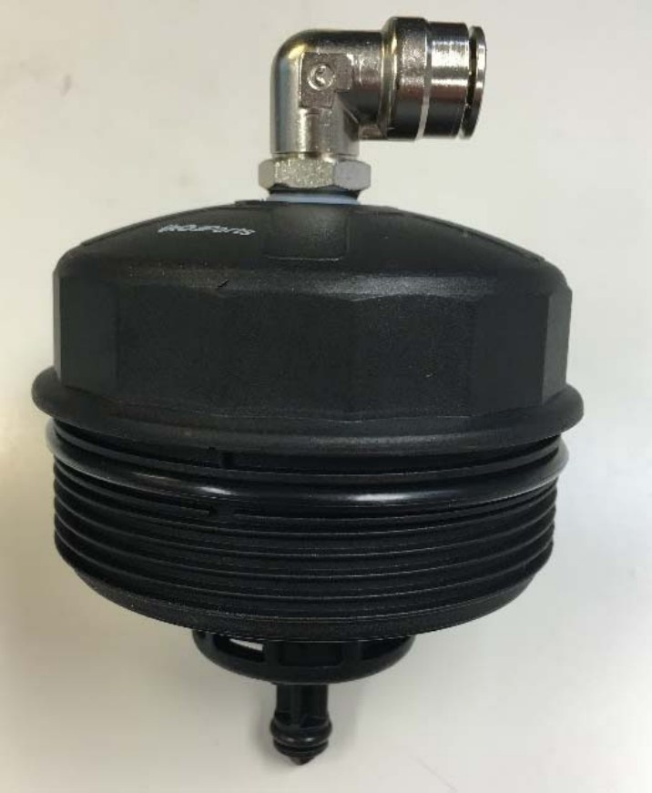

Doc no. MOC-TSB-16-01 // Vol. 16 No. 01 // Feb 4, 2016 // Engine
Engine Flush Adapter for BMW 2.0L & 3.0L Engines
New96134
MOC has developed a new Engine Flush Adapter for various models of BMW vehicles with 2.0L and 3.0L engines (Part No. 96134). This adapter is known to fit the vehicles listed in the table below.
What's new
This adapter is now available for purchase.
Contact
For more information, contact the Machine & Equipment Department at 866.244.6621.

Known to fit (BMW, 96134)
| Years | Model |
|---|---|
| 2006 - 2014 | BMW 1 Series (E82,E88) 128i |
| 2006 - 2014 | BMW 1 Series (E82,E88) 135i |
| 2011 - 2012 | BMW 1 Series (E82,E88) M Coupe |
| 2011 - 2012 | BMW 1 Series (E82,E88) M Coupé |
| 2013 - 2016 | BMW 2 Series (F22) 228i |
| 2013 - 2016 | BMW 2 Series (F22) 228iX |
| 2013 - 2016 | BMW 2 Series (F22) M235i |
| 2013 - 2016 | BMW 2 Series (F22) M235iX |
| 2011 - 2016 | BMW 3 Series (E21,E30,E36,E46,E90,E91,E92,E93) 320i |
| 2011 - 2016 | BMW 3 Series (E21,E30,E36,E46,E90,E91,E92,E93) 320iX |
| 2005 - 2012 | BMW 3 Series (E21,E30,E36,E46,E90,E91,E92,E93) 323i |
| 2004 - 2007 | BMW 3 Series (E21,E30,E36,E46,E90,E91,E92,E93) 325i |
| 2004 - 2007 | BMW 3 Series (E21,E30,E36,E46,E90,E91,E92,E93) 325xi |
| 2004 - 2016 | BMW 3 Series (E21,E30,E36,E46,E90,E91,E92,E93) 328i |
| 2011 - 2016 | BMW 3 Series (E21,E30,E36,E46,E90,E91,E92,E93) 328iX |
| 2005 - 2013 | BMW 3 Series (E21,E30,E36,E46,E90,E91,E92,E93) 328xi |
| 2004 - 2007 | BMW 3 Series (E21,E30,E36,E46,E90,E91,E92,E93) 330i |
| 2005 - 2007 | BMW 3 Series (E21,E30,E36,E46,E90,E91,E92,E93) 330xi |
| 2005 - 2016 | BMW 3 Series (E21,E30,E36,E46,E90,E91,E92,E93) 335i |
| 2009 - 2014 | BMW 3 Series (E21,E30,E36,E46,E90,E91,E92,E93) 335is |
| 2011 - 2016 | BMW 3 Series (E21,E30,E36,E46,E90,E91,E92,E93) 335iX |
| 2006 - 2013 | BMW 3 Series (E21,E30,E36,E46,E90,E91,E92,E93) 335xi |
| 2012 - 2015 | BMW 3 Series (E21,E30,E36,E46,E90,E91,E92,E93) Hybrid 3 |
| 2012 - 2016 | BMW 3 Series (E21,E30,E36,E46,E90,E91,E92,E93) M3 |
| 2013 - 2016 | BMW 4 Series (F32, F33, F36, F82, F83) 428i |
| 2013 - 2016 | BMW 4 Series (F32, F33, F36, F82, F83) 428iX |
| 2013 - 2016 | BMW 4 Series (F32, F33, F36, F82, F83) 435i |
| 2013 - 2016 | BMW 4 Series (F32, F33, F36, F82, F83) 435iX |
| 2013 - 2016 | BMW 4 Series (F32, F33, F36, F82, F83) M4 |
| 2004 - 2007 | BMW 5 Series (E12,E28,E34,E39,E60,E61) 525i |
| 2004 - 2007 | BMW 5 Series (E12,E28,E34,E39,E60,E61) 525xi |
| 2005 - 2016 | BMW 5 Series (E12,E28,E34,E39,E60,E61) 528i |
| 2010 - 2016 | BMW 5 Series (E12,E28,E34,E39,E60,E61) 528iX |
| 2005 - 2010 | BMW 5 Series (E12,E28,E34,E39,E60,E61) 528xi |
| 2004 - 2007 | BMW 5 Series (E12,E28,E34,E39,E60,E61) 530i |
| 2004 - 2007 | BMW 5 Series (E12,E28,E34,E39,E60,E61) 530xi |
| 2006 - 2016 | BMW 5 Series (E12,E28,E34,E39,E60,E61) 535i |
| 2009 - 2016 | BMW 5 Series (E12,E28,E34,E39,E60,E61) 535iX |
| 2006 - 2010 | BMW 5 Series (E12,E28,E34,E39,E60,E61) 535xi |
| 2011 - 2016 | BMW 5 Series (E12,E28,E34,E39,E60,E61) Hybrid 5 |
| 2011 - 2016 | BMW 6 Series (E24,E63,E64) 640i |
| 2013 - 2016 | BMW 6 Series (E24,E63,E64) 640iX |
| 2009 - 2015 | BMW 7 Series (E23,E32,E38,E65,E66,F01,F02) 740i |
| 2009 - 2015 | BMW 7 Series (E23,E32,E38,E65,E66,F01,F02) 740Li |
| 2011 - 2015 | BMW 7 Series (E23,E32,E38,E65,E66,F01,F02) 740LiX |
| 2011 - 2015 | BMW 7 Series (E23,E32,E38,E65,E66,F01,F02) Hybrid 7L |
| 2009 - 2015 | BMW X Series (E53,E70,E71,E83) X1 |
| 2006 - 2016 | BMW X Series (E53,E70,E71,E83) X3 |
| 2013 - 2016 | BMW X Series (E53,E70,E71,E83) X4 |
| 2006 - 2016 | BMW X Series (E53,E70,E71,E83) X5 |
| 2007 - 2016 | BMW X Series (E53,E70,E71,E83) X6 |
| 2004 - 2016 | BMW Z Series (E52,E85,E86,E89) Z4 |
Part numbers
| Part No. | Description | Notes |
|---|---|---|
| 96134 | Adapter, Oil Filter, BMW 2.0L & 3.0L |